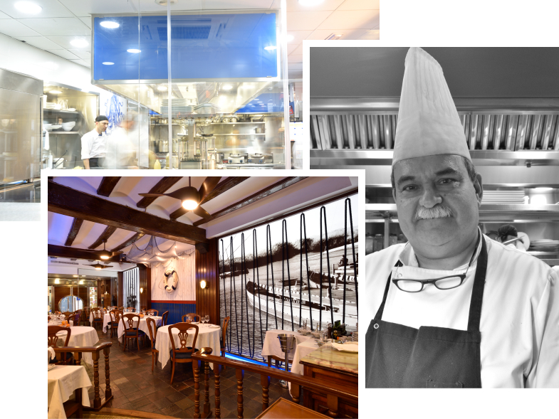

Marisco y pescado fresco recibido cada día desde el Cantábrico, Galicia y el Mediterráneo. Cocina valenciana tradicional en pleno corazón de Valencia, con más de cinco décadas haciendo lo mismo: respetar el producto.
Una marisquería con historia en el centro de Valencia
Abrimos las puertas en 1967 con una idea sencilla: traer cada día el mejor marisco y pescado del Cantábrico, Galicia y la lonja valenciana, y servirlo como se merece.
Casi seis décadas después seguimos con la misma filosofía. La mar manda y la cocina escucha. Recibimos producto fresco a diario, lo tratamos con el respeto que pide y lo servimos con la naturalidad de siempre.
Mariscadas, arroces de leña, pescados al horno y a la sal, carnes seleccionadas y una bodega cuidada por nuestro sumiller con más de doscientas referencias. Todo en un comedor clásico valenciano, en pleno barrio del Ensanche.
— Familia Civera

59años abiertos
1967
Año de fundación
0+
Reseñas reales
0/50
Valoración TripAdvisor
0
Días al año con marisco fresco
La carta
Algunos de nuestros platos
Una pequeña selección. La carta completa cambia con la temporada y el producto del día.
Carpaccio de gamba roja de Denia — signature
Cortada en finas láminas, AOVE, flor de sal.
26 €
Bogavante azul
A la plancha, cocido o en arroz.
s/m
Lubina salvaje a la sal
Pieza entera, sal marina gruesa, aceite de cebollino.
32 €
Arroz a banda — de la casa
Caldo de morralla, sepia, allioli suave. Mín. 2 personas.
Reseñas verificadas en TripAdvisor y Google Maps de quienes ya han pasado por Civera.
4,3
★★★★★
Sobre 2.244 reseñas en TripAdvisor
★★★★★
"Como siempre, Civera lleva con merecidos honores la bandera de buque insignia de la restauración en la ciudad de Valencia. Excelente producto, tratado con gran respeto en la cocina, y un impecable servicio en sala."
Eugenio R. G
enero 2026 · TripAdvisor
★★★★★
"Cuando se cuida el producto, la cocina y la atención al cliente, el éxito hace que sea un placer visitarlo. Pasan los años y sigue siendo una referencia en Valencia."
Jaime B
octubre 2024 · TripAdvisor
★★★★★
"The best paella in Valencia. The seafood paella was incredible and the tuna tartare and wine selection were excellent thanks to the very friendly staff. A truly typical Spanish restaurant — highly recommended."
Actividad: Restauración (CNAE 5610). Sociedad inscrita en el Registro Mercantil de Valencia.
Objeto
El presente aviso legal regula el uso del sitio web www.marisqueriascivera.com, titularidad de Prados de Galicia, S.L. La navegación por este sitio atribuye la condición de usuario e implica la aceptación plena de las presentes condiciones.
Propiedad intelectual
Todos los contenidos del sitio (textos, imágenes, marcas, logotipos, código) son titularidad de Prados de Galicia, S.L. o están licenciados a su favor. Queda prohibida su reproducción total o parcial sin autorización expresa.
Responsabilidad
Prados de Galicia, S.L. no se responsabiliza de los daños o perjuicios derivados del acceso o uso de este sitio web ni de los contenidos enlazados a sitios de terceros.
Legislación aplicable
El presente aviso legal se rige por la legislación española. Para cualquier controversia las partes se someten a los Juzgados y Tribunales de Valencia.
Política de privacidad
Responsable del tratamiento: Prados de Galicia, S.L. — CIF B96225404
Gestionar las reservas y consultas que nos remitas a través del sitio web, teléfono, email o WhatsApp.
Cumplir con las obligaciones legales aplicables al sector de la restauración.
Si lo consientes, enviarte comunicaciones comerciales sobre nuestros servicios.
Legitimación
Ejecución de la relación contractual (reserva), consentimiento del interesado, y obligaciones legales aplicables.
Conservación
Los datos se conservarán mientras se mantenga la relación o hasta que solicites su supresión, y posteriormente durante los plazos legales aplicables.
Destinatarios
No se cederán datos a terceros salvo obligación legal. Trabajamos con CoverManager (proveedor de software de reservas) bajo contrato de encargo de tratamiento conforme al RGPD.
Derechos
Puedes ejercer en cualquier momento tus derechos de acceso, rectificación, supresión, oposición, limitación y portabilidad escribiendo a info@marisqueriascivera.com con copia de tu DNI. También puedes presentar reclamación ante la AEPD (www.aepd.es).
Política de cookies
Una cookie es un pequeño fichero que se descarga al ordenador o dispositivo del usuario al acceder a determinadas páginas web. Las cookies permiten almacenar y recuperar información sobre los hábitos de navegación.
Cookies que utilizamos
Técnicas (necesarias): permiten el funcionamiento básico del sitio, como recordar el idioma seleccionado o la decisión sobre cookies.
Analíticas (opcionales): nos permiten conocer de forma anónima cómo se usa el sitio para poder mejorarlo.
Terceros: al cargar el mapa de Google y el widget de reservas de CoverManager, esos servicios pueden instalar sus propias cookies. Solo se cargan tras tu interacción.
Gestión
Puedes aceptar o rechazar las cookies analíticas desde el banner inicial. También puedes configurar tu navegador para bloquear o eliminar cookies en cualquier momento.
Más información
Para más información puedes escribir a info@marisqueriascivera.com.